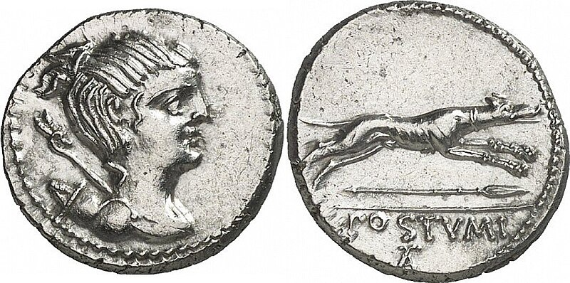

Tiene un físico ligero y estilizado, con patas largas y pecho voluminoso, que le permite alcanzar grandes velocidades. La altura a la cruz suele ser 62-70 cm en los machos y de 60-68 cm en las hembras. La capa típica es de pelo corto, liso y muy fino. Pero existe también la variedad de pelo duro, que presenta pelo áspero y largo, repartido homogéneamente por el cuerpo, con, bigotes y tupé. Los colores más típicos son: barcino o atigrado, negro, barquillo, tostado, canela, amarillo, rojo, blanco, berrendo o pío.
Suele hablarse del parecido entre el galgo y las representaciones caninas del arte egipcio; el galgo probablemente tiene sus principales ancestros en los perros faraónicos egipcios, igual que el podenco. Es probable además que el Vertades romano sea otro de sus antepasados. Lo cierto es que las primeras referencias escritas del galgo ibérico se hallan en el tratado romano del siglo II a. C. Cynegeticus de Arriano de Nicodemia, quien fue cónsul de la Bética.

Denario romano en el que podemos ver representado un perro tipo galgo